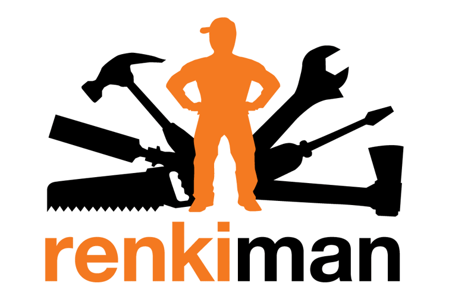
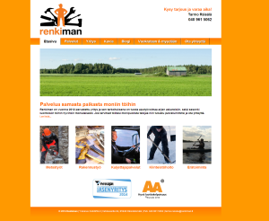

Renkiman kotisivut
Renkiman on vuonna 2012 perustettu yritys ja sen tarkoituksena on tuoda aputyövoimaa arjen askareisiin, sekä sesonki luontoisiin töihin hyvinkin monialaisesti.
Suunnittelin yrityksen visuaalisen ilmeen sekä toteutin logon, mainosmateriaalia ja kotisivut. Sivujen pohjana käytin WordPress julkaisualustaa.
Tutustu sivuihin: www.renkiman.fi